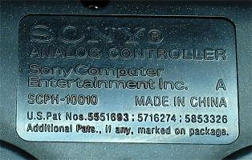
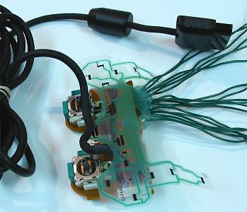
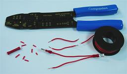
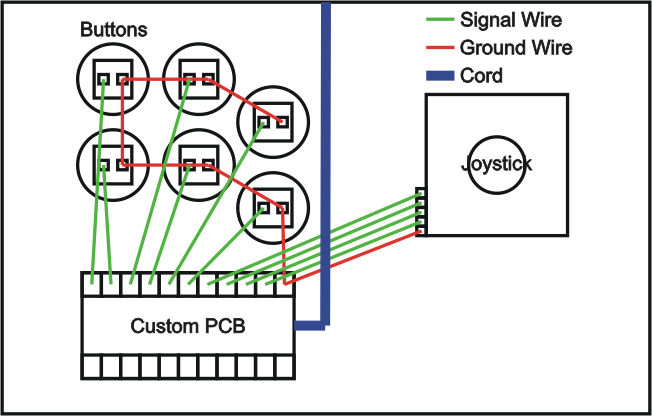

PCB and Wiring
A PCB from another source can be used in replacing the electronics in a standard device, or giving communications to a custom controller.
The simple goal in wiring is to have the grounds and signals of each device linked to the ground and desired corresponding signals on the PCB. Each device has switches; when the switch is engaged, a circuit between the ground and signal should complete and send the signal from the PCB through a cord or remote to the computer or console. Wires and connectors, solder, and/or twisting are used to link the devices to the PCB.
For quality PCB wiring, the main goals are having required signals covered by the PCB, corresponding ground and signal connections and circuits, solid and secure connections, connections that will not cross or interfere, insulation, and some level of organization.
While this wiring concept is simple, implementing it can be more difficult as you can see by the size of this section.
Contents
Grounds and Signals and Circuits
PCB Attributes
Extracted PCBs
Soldering
PCB Mapping and Soldering
PCB Components Modification and Removal
Solderless Extracted PCBs
PCB Diagrams
Wire
Terminals and Crimping
Twisting
Splicing and Chaining
Joystick Connection
Terminal Strips and Organization
Custom PCBs
Multiple PCBs
Grounds and Signals and Circuits
In order to understand the function of a ground and a signal in a switch and its device, you have to understand a few things about electricity.
For electricity to do its work, it has to flow; the movement of electrons is what usually gives electricity its effect on things. In order to flow, electricity needs an entry point and an exit point, and there has to be a difference in charge between the entry point and the exit point. Electrons flow quickly from an area with relatively more electrons to one with relatively fewer electrons.
The flow of electricity from one charge to a different charge is where the signal and ground come into play. In most circumstances, the signal has the added charge; each signal comes with unique attributes to send unique commands. And, in most circumstances, the ground has no charge; it gets its name from the fact that the ground of the earth usually has no charge and is a good place to connect the outlet of an electronic device; since the ground has no unique attributes, usually the same ground (often called a common ground) gets used by various signals, acting as a sink for the charge used by signals.
A circuit is basically a connection between different charges. When a switch is not engaged, the connected circuit is open and not completed, and usually no work is done. When a switch is engaged, the connected circuit is closed and completed, and work is done by the electricity. When a signal is connected with a corresponding ground, a circuit is completed and the device does its work.
PCB Attributes
Circuits are at the heart of electronics. In order to compact, organize, and exploit many circuits, they are often printed on a board, making a printed circuit board, ie a PCB. Numerous and detailed conductive paths lay out the circuits and functions for a device.
The bulk of most PCBs is made of a light, highly durable, nonconductive substance with a texture similar to fiberglass. On this another nonconductive layer (usually dark-green) that bonds well to metal is added. On this is added the conductive metal (usually copper) that makes up all the paths in the PCB. On the metal that does not need to be exposed, a nonconductive protective layer (usually light-green and called a solder mask) is used.
In older PCBs, usually only one side of the PCB is used. In newer PCBs, both sides are often used by adding small, conductive through-holes in the PCB.
Solder points consisting of an open metal plate with a hole in the center are used to connect wires that send and receive signals.
Originating from a wire in the cord or battery is the ground; it usually gets spread throughout the PCB in a long path. A ground is easily recognized as its path chains to several nodes. Sometimes multiple grounds are used and will need to have corresponding ones provided to each signal.
Image: NES PCB
For each signal, there is a path leading from a node (like a button or solder point) to an integrated circuit (a chip) which is powered by the charge in a different wire in the cord or battery. When a signal is connected to its ground, it gets received by the integrated circuit. The integrated circuit turns the charge into a command and sends it down other paths to the solder points connecting to the cord or remote.
The PCB's structure can be regarded as simple nodes (like solder and button points) and connections (paths) between those nodes (this is how electronics diagrams are made). Because electricity travels near the speed of light, as long as they connect, the length of the paths between nodes is not really important. And anything that connects anywhere along those paths can usually emulate what the connected node(s) does.
PCBs in pad controllers are usually spread throughout the inside proportioned to the buttons and pads. Commands in pad controllers are made by having a small, conductive plate at the bottom of each button press down directly onto the PCB to complete the circuit between the ground and signal paths. Often conductive rubbery nodes (usually black) are placed where buttons are pressed. Sometimes metal plating will be beneath it, while others will branch to a metal plate.
PCBs often have added pieces and components that can be removed without making the PCB malfunction. These include rumble motors and bare areas of the PCB usually like shoulder button PCBs and the caps on analog sticks. But when it comes to the analog sticks themselves and other electronic components, caution should be used, and things get more complicated. Removal of these is discussed in a later subsection.
Extracted PCBs
The goal in extracting a PCB from a device is to modify it to work for another instrument.
The drawback to using an extracted PCB is that it will usually require soldering with more permanent and complex steps in building your controller, and it takes more time and experience than using a premade PCB. The upside is you can easily choose the system for which your controller is designed, get cheaper converters, and maybe save a bit of money.
Find a device like a keyboard or gamepad (preferably) with the compatibility and the number of commands you need (one for each button, four for the joystick).
There are trade-offs to using a first- or third-party device. First-party devices, made by the same makers of the console, generally have great performance with the machine for which they are designed, but often are more expensive. Third-party devices, made by independent makers, can sometimes have performance problems, but are usually less expensive; an example of this is, due to complex formatting, many third-party Playstation 3 controllers have a flaw that will not allow the left direction to engage for more than a few seconds.
Third-party devices can also be more delicate. Often, a much thinner, more fragile layer of metal is used on the PCB (if the PCB is not damaged during modification, this is not a problem). Some makers (like Intec) also intentionally make their controllers very difficult to modify. For these reasons, it is often a good idea to either use a first-party device, or make sure a specific model of a third-party device works well.
Images: Converters
Using a first-party Playstation 1 controller is often a good option as it is inexpensive and has a lot of buttons, good performance, simplicity, Playstation 2 compatibility, and a lot of converters made for its use on computers and other consoles. Dual Shock 1 controllers are often preferred because they have better compatibilities with some converters and PS2 games. Some converters can lag a fraction of a second, or have interfering signals, so look around for recommendations in quality converters (SDTekken has some of this information link). Also note Xbox 360 and PS3 controllers work on PCs with the proper drivers.
A used or even broken controller will also work fine as long as the PCB (which is pretty much sealed) and cord or remote are fine, so check your old controllers or local game stores or trading websites.
Images: Simple, yet very practical, controller; Controller opened
When extracting the PCB, make sure not to disturb the board(s), the wiring between the board(s) and cord or remote, and the cord or remote itself; these are the things you need. Undo all the connections that hold the device together (usually just screws) before opening it up.
I do not recommend going through the trouble of using keyboard PCBs unless you are already very familiar with modifying them. Many keyboard manufacturers also specifically design their PCBs in a way that makes exploiting them for other things difficult. Keyboard PCBs can have problems with sending multiple signals close to the same time called "ghosting" (you can be familiar with this by the reaction your computer gives you when you mash keys) and may require some extra work to function properly. Plus it can be difficult to distinguish game commands from standard keyboard commands on your computer. PCBs from game controllers are much easier.
Soldering
Solder is conductive metal that melts at a relatively low temperature and is used to bond two or more metal surfaces; it can be described as conductive, metal, hot glue. Solder does not bond things that are not made of metal. In regards to a controller, it can be used to bond wire ends to metal spots on an extracted PCB and/or switch terminals on devices like joysticks and buttons, or even crimping terminals.
Soldering is not the same as welding which melts two metal objects together without an added substance using very high temperatures not feasible for electronics.
Soldering takes a bit of practice. It is not as simple as melting things together. There are a few complicating things.
For solder to bond to a metal surface, the surface also needs to be heated. There is a slight welding of the solder to the metal surface. Soldering irons actually are not specifically designed for melting solder, they are for heating surfaces so the surfaces can melt the solder. Soldering works best when the metal surface(s) is heated and the solder is melted on the heated metal surface. When molten solder comes in contact with a metal surface that is properly heated, it attracts to it like a magnet. A good solder connection should hold like strong glue.
Image: Weak solder connection due to oxidation or lack of heating (left), strong connection (right)
Adding a very small bit of solder to the tip of the iron gives it a medium to transfer heat from the soldering iron to the metal surface (this is called wetting).
The main cause of difficulty in soldering is oxidation. Oxidation removes electrons from metal particles; this does two negative things in electronics soldering. It makes metal less conductive. And it makes solder and metal surfaces not adhere as well. Oxidized metal looks dirty and dull. Oxidized solder is dull (though lead-free solder always is) and more white, and is not cohesive or adhesive. Unfortunately, oxidation occurs at a substantially faster rate when metal is heated.
Oxidation is fought in a few ways. If dirty, the surfaces of the metal need to be cleaned before soldering using abrasives like steel wool, sandpaper, or scraping using things like the head of a wire.
The main oxidation fighter in soldering is flux. Flux removes oxidation. One main flux substance is rosin (hence the use of rosin-core solder; flux can also be found by itself). You see the flux when you melt fresh solder and smokes emerges; the smoke comes from the flux. Fresh rosin-core solder or flux added to old solder can also help remove oxidation. When working with oxidated metal, you can often see it take on that magnetic quality once flux has been heated into it.
As you can see when you melt solder, the flux (smoke) only lasts so long. This introduces another fighter of oxidation: speed. The solder and the metal surfaces should be heated for as little period of time as possible.
There are many objects that can go into a solder connection: two or more metal surfaces, solder, and a soldering iron. You only have two hands and should not try stunts to hold many things at once. Use things like clamps and alligator clips or helping hands to hold surfaces, and techniques that fit working with two hands.
With these concepts in mind, there are two main methods for soldering. In each the soldering iron needs to warm to a high temperature beforehand.
The first and more difficult technique involves placing the two metal surfaces in their final position, holding the soldering iron in one hand and the solder in the other, and heating both surfaces while adding the solder.
Image: Soldering all surfaces simultaneously: the soldering iron is wetted, the iron is applied to heat both surfaces and solder is added to one side, solder is applied to surround the connection, excess is cut away (this is best done with diagonal cutters)
The second and easier technique involves placing most of the needed solder on each metal surface (this is called tinning) and then melting them together with the soldering iron in one hand and one of the surfaces in the other. Tinned surfaces generally take solder connections easily. The downside of this technique is slightly more oxidation occurs.
Image: Soldering in individual steps: half the needed solder is heated to one surface, the other half is applied to the other surface (both cool), the soldering iron is wetted (with more solder than usual), the two are melting together
Another technique that is a hybrid of these two techniques is putting solder on only one of the surfaces and the tip of the soldering iron and quickly heating the surfaces together. This technique may be preferred if one of the surfaces (like a thin or cheap PCB path) is fragile.
Be sure to use thin rosin-core solder or plain solder along with flux paste, and use a lower heat (about 15 or 40 watts, 15 to 25 being more appropriate) soldering iron with a thin head to compliment the small size of PCBs and control oxidation.
The head of a soldering iron endures oxidation and other contaminates that make it less effective too; it needs to be cleaned often using things like damp sponges, and steel wool and fresh and quickly removed rosin-core solder or simple flux. The iron should be wiped clean with a damp sponge before being set idol. If the head on a soldering iron is old and not holding solder in small drops, it should be replaced to avoid poor solder connections.
There is a high chance in learning to solder you will get burned a few times. Treat burns with cool (not cold) water and maybe some ointment and bandaging. Remember to be organized, not to touch any metal on the soldering iron, and that heat transfers (do not hold objects near where they are being heated). Consider getting a soldering station to make things easier; a station can also extend the life of the iron and its head.
A good ally to soldering can be hot glue (most associated with glue guns). It does not conduct electricity and reinforces solders so they will not later break. This makes being gentle with the PCB not so necessary. Usually, good solder connections hold well without glue, but smaller connection, cheap PCBS, or heavier wire may need its help. Hot glue can also help hold a base of a wire to an unused part of the PCB to make it easier to get the wire held in the needed place before soldering, and give even more reinforcement. Hot glue can be removed with some warm air and peeling. Other more permanent strong glues can also do this job.
PCB Mapping and Soldering
Before extracting a PCB, make sure all the functions are working properly so you know that the PCB is sound. Once a PCB has been extracted, if the cord is not secured strongly to the PCB with a harness, it is a good idea to reinforce the cord's connection with hot glue.
When wiring a PCB extracted from a pad controller, you need to solder a wire to the signal for each of the needed buttons, and one (or more) wire to each of the unique grounds used by those signals. The ground is usually shared around in the PCB and therefore can be shared among all the signals. If the ground is not completely universal, you will need to pair each unique ground with its corresponding signal. Even when the ground is universal, some builders prefer attaching a wire to each ground at each button.
There is usually a large area for each signal (and another with it for the ground) under each button on the PCB. You need to figure where to attach easily each corresponding wire on the PCB. You may find a diagram that lays out the various points of attachment here or elsewhere online. You can recognize grounds if their paths are used in more than one button.
The best way to map a PCB is to rest the PCB on something nonconductive, plug it in, get a wire, and tap the ends around on the paths of the PCB, noticing what commands occur, to figure what each path represents. Again, signals will usually have unique paths while grounds will get shared. Use this to recognize paths and nodes where wires can be attached. (This is the method I have used in mapping most my PCBs. A controller PCB should not have enough voltage to shock you. They are usually 5 volts, upwards of 10, and you should not even feel anything. I have not been shocked doing this, grabbing many plugged PCBs in many ways, but do not hold me responsible if you manage to find a way to hurt yourself doing this.)
In soldering a certain model of PCB for the first time, I recommend testing the PCB often. Every few attachments, check if things are working properly. Start by connecting a ground and test the signals as you go. This testing will help you narrow down when and where things go wrong in the soldering process.
Each chosen place to solder should not come in contact with other soldering points or components or nodes; this can cause signals to constantly be engaged, or other problems. You will need a wire cutter and stripper to prepare the wire for soldering.
If necessary, use an abrasive tip like a wire end to scratch rubber or the light-green protection and expose metal where solder can be attached (a rotary tool with a small abrasive tip is good for this). It is even possible to solder wire to thin paths among other paths; use a pin and very carefully scratch the correct path and avoid scratching the others (it is not easy); support for the wire and immediate glue will be necessary to keep a solder like this attached and not tearing the path away.
Images: Two soldering techniques: Rubber scraped off signal plates; Wires; Prepared solder added to one set, hole drilled and wire inserted on other; Soldering done; Glued on top for top soldered wire, and excess cut; Glued on bottom for drill solder
There are a couple ways to attach wires to the PCB. You can attach the wire directly to metal plating on the surface (bending the wire end to an L-shape can help in this). Or you can drill a hole using a strong 1/16" (2mm; I tend to recommend at most 1/32" or 1mm; small rotary tools are great for this too) or less drill bit by the metal plate and thread the wire through the bottom to solder it like standard soldering is done (this can be tricky and should not be done on double-sided PCBs).
Solder points can be replaced using your own wire. Heat the wire end protruding from the solder point while pulling the wire out. Make sure to recreate the hole by pushing the tip of the iron into the hole or by using a desoldering tool, or just push the new wire through while the point is heated. Add some fresh solder or flux to remove oxidation.
Do not pull hard on cooled solder connections; the metal plating (especially in smaller areas) can easily be ripped from the PCB. Sometimes solder touching a wrong location can be cut away using an utility knife.
If an attachment does not seem to be holding (often because rubbery substances are melting in the way), scrape the metal surface again.
Image: Finished soldering: most solders were done on nodes reached from actual button spots, others were attached to detailed scratched paths; the plan was clustered so much of the PCB could be cut away using a hack saw; the solder points were glued because the 20 AWG wire used is heavy and rigid
Parts of the PCB that are not critical (like motors and often shoulder PCBs) can be desoldered or cut away from the rest to make it smaller using a strong tool. You may want to try to cluster the solders to make this work better. Just be sure not to cut something essential away; you will have to replace paths and/or components if it makes the PCB malfunction. The next section discusses this.
A box (called a project box/enclosure in electronics) or groove in or box built into the bottom of the control panel is often made to house and protect the extracted PCB.
PCB Components Modification and Removal
This subsection is a little more advanced than the others, but it is not all that complicated. I intentionally separated this subsection because it is more difficult and not necessary in the PCB process. But those wanting to go the extra mile are perfectly welcome.
As already stated, PCB shoulders, motors, and analog stick caps can usually be removed without a problem. But removing things beyond that, like electronics components and their paths, can easily cause the PCB to malfunction.
Many small components are often also added to make the controller function; usually, the newer the controller, the more added components it has. Some of the components include (and this stuff is not very important so do not let it throw you):
- Capacitor - stores an electric charge; often labeled with a C followed by a number.
- Diode - allows electricity to flow only one direction; often labeled with a D followed by a number.
- Ground - signal sink that allows electricity to flow; often labeled with GND.
- LED - light emitting version of a diode.
- Integrated Circuit - processes and augments signals; often label with a U followed by a number.
- Jumper - jumps a conductive path outside the PCB; often labeled with a J or JP followed by a number.
- Resistor - decreases current and voltage; often labeled with an R followed by a number.
- Variable Resistor - gives varying resistance using a lever; often labeled with VR followed by a number.
- Switch - place where signals toggle on and off; often labeled with SW followed by a number.
- Test Point - metal plate linked to paths used for testing; often labeled with TP followed by a number.
- Transistor - increases current and voltage; often labeled with a Q or T followed by a number.

Image: PS2 PCB
Almost always, if one of these components is removed from contact with the proper paths on the PCB, the PCB will not function properly. Console and controller makers make their systems and controllers more complex to offer more functionality and make their hardware more exclusive and difficult to imitate; they often add features that will make their controller easily fail if modified.
More complex circuitry is also how makers can create multiple grounds. But multiple grounds is not an accurate term; there is only one simple ground (usually using the one beneath your feet), and it comes from a unique wire or battery sink in the PCB. What these more complicated PCBs have are commons, which is a term short for common lines/paths. Complex processors dictate diverse paths that must interact to engage. Signals that share these different paths have commons. Sometimes one of these commons is the actual ground coming from the cord or battery. A common ground (as opposed to a simple common line) is the ground shared among a set of signals (usually all of them) for engagement.
Many PCBs (especially newer ones) use variable resistors for things like analog sticks and trigger buttons. Variable resistors make analog functions possible by giving varying degrees of voltage for different signals.
Images: Analog stick; Analog stick connections
The analog sticks in most controllers are constructed in the same way. Four corner solder points are used to secure the stick to the PCB. Four more solder points are used to secure the click button which is a switch between the two points close to the stick and the two points far from the stick. And, most essential, two variable resistors are attached, one measuring horizontal movement, the other measuring vertical movement.
Each variable resistor has three attachment points. One of the side ones is a lower voltage, usually the ground. The other side one is a higher voltage, usually the voltage from the cord. The same lower voltage and higher voltage sources usually each get distributed to each variable resistor. The middle point is the receiving signal for the processor. Varying voltage is sent through the signal by adding varying resistance between the side voltages.
The problem in removing variable resistors is it leaves zero voltage. Because of this the PCB will usually consider them engaged. Triggers will be usually be viewed as held in, and analog sticks will be viewed as a diagonal.
To replace variable resistors with steady resistors that will make it so interfering signals are not sent, first remove the resistor by heating the three solder point and pulling it out. For variable resistors used by triggers, usually one steady resistor is needed between the voltage source and the middle signal point. This will send a low voltage (which usually is not zero) and make the PCB consider it unengaged. 10K resistors usually work fine, but around 5K is often preferred so it does not affect much current in the PCB.
In replacing analog sticks and their variable resistors, things are more complicated. First, removing them from several solder points can be difficult. You can usually bend the resistors away from stick and just deal with removing the other eight points. You will need some desoldering braid and probably some flux paste. Desoldering braid works like a mop; first cover the solder needing removal with flux paste so the heat does not ruin the board and the braid can absorb the solder, then press the braid directly against the solder and heat it using a soldering iron; move the braid around like a mop and collect as much solder as you can. You can also submerge it in constantly heated solder and have it soak it up. Keep in mind the braid needs to be heated too to absorb the solder. As braid is used, it is cut and thrown away. With as much solder removed from the analog sticks as possible, push the stick out of the PCB; you may need some pliers to help in this.
Note also that desoldering braid can help temporarily removed the cord to make the PCB easier to work.
Image: Analog sticks getting replaced with many steady resistors
The PCB might be perfectly functional with the bulk of the sticks removed and bent variable resistors remaining, but you can replace them with steady resistors. But unlike trigger resistors, analog sticks use the full range of voltage in determining direction; full voltage will be all the way up, zero voltage will be all the way down, and a voltage in the middle of those will be neutral. To put the voltage in the middle, two equal resistors (that can range between 3.3K and 10K, around 5K usually ideal for current) are needed. One resistor needs to be between the middle point and each side point to achieve a middle voltage.
But there can also be another problem for analog stick removal, and it comes from the click switch. Click switches can have paths necessary to keep the PCB functional. The most surefire way to deal with this is to examine the analog stick and see what parts of the switch connects (usually the inside set and outside set connect); add wire to the PCB connecting the necessary switch points.
Images: Analog PCB getting replaced with distributed voltage using resistors
Usually many variable resistors can be removed in modifying a PCB, which tends to mean many resistors are necessary. But as Toodles has pointed out, you only need one for removing all the triggers, and two for removing all the analog sticks. Each of the middle signals is looking for a certain voltage. The voltage from one spot where resistance has been applied can be distributed to all the middle points needing that same voltage. So, using added wire or solder touching all the needed paths, the voltage can be taken from the ends of the steady resistors to the middle points needing it.
Image: Xbox 360 Madcatz 4716 (late version) analogs neutralized with 3.3K distributed resistors, and triggers neutralized with 1.5K resistors but using 3.3K to engage
Usually analog sticks use variable resistors in the same way, but triggers can use them differently. In some cases the PCB will require more resistance/less voltage to engage the trigger. A multimeter can help in determining this.
Modifying resistors can be complicated. I recommend constantly testing between procedures so you can narrow down where something went wrong. Do one stick at a time and test often.
Image: Resistors, 4.7K (yellow, purple, red), 8.2K (grey, red, red), 10K (brown, black, orange)
It is also possible to turn variable resistors into on-off switches. No resistance occurs when either two points have no connectivity or full connectivity (like a wire linking them). To make added steady resistors into a switch, connect one side of a switch terminal to one side of the resistor, and the other side of the resistor to the other terminal; when the switch engages, the voltage goes low or high, and it is engaged. This can also be used to turn the analog stick resistors into directional switches. Note each signal will need its own set of steady resistors. Also note this is much more difficult when the analog signal requires higher resistance for engaging.
As demonstrated already, sometimes some of the PCB itself can be cut away. In newer PCBs, this can be very risky. Like variable resistors, it's all about replacing what is removed. When cutting away bare parts of the PCB, usually paths will need to be replaced with linking wire. I tend not to recommend this stuff on newer PCBs.
The other thing often modified on an extract PCB is the cord. Wires in the cord can just be treated as paths on the PCB. Where one thing is disconnected, it needs to be reconnect. If using a different make of cord, you will probably need a multimeter to determine what parts of the PCB lead to what terminal in the plug, and what wire goes to which terminal in the new cord.
The multimeter can be a very useful device. For a PCB, it can measure resistance, voltage, and connectivity. It can be used in measuring exact resistances to replace in the PCB, where the voltage is located, and what points connect where. I have used the connectivity setting in my multimeter to find grounds or commons in PCBs (because they are shared) and test points linked to commons and signals (if any).
Solderless Extracted PCBs
A few specific models of controllers can be utilized without soldering; this method is often called the spiffyshoes hack after the user who brought it attention.

Images: PS2 controller without solderless structure; PS2 controller with possible solderless structure (note smaller font)
The following models of PCBs can use the solderless technique:
- PS1 Dual Shock A (Late Version)
- PS1 Dual Shock M
- PS2 Dual Shock A (Early Version w/ Resistor)
- PS2 Dual Shock A (Late Version)
- PS2 Dual Shock M
- PS3 Sixaxis
- PS3 Dual Shock
Images: Opened controller that can be used without soldering; The membrane face used by the controller, the extra button (which is actually a resistor) circled
Basically, all that is done in using one of these controllers is inserting stripped wire tips snugly into the terminal used by the membrane switches; this membrane has a path leading to the terminal for each function. You need 22 to 26 AWG solid (not stranded) insulated wire, and the tips stripped about 3/16" for PS1 and PS2 PCBs; 24 AWG solid with thin insulation (like extracted from shielded wire) stripped about 3/32" is necessary for PS3. The best wire for all solderless PCBs is extracted from 24AWG multiple solid cable. Since some wire can be a bit thick when lined together, you may need to strip every other wire end a bit extra, or part every other wire, to make them fit. You may want to keep the tip of the membrane inserted to make the fit more snug.
Images: Starting inserts; Inserts finished and working
You can cut the tip off the membrane when using a PS1 model, but you may need the membrane if you are using a PS2 or PS3 model. The PS2 model has two more paths than the PS1 model; one path is a ground specific to the start, select, and analog buttons; the other path is for a resistor; the PS3 has another resistor and two more paths. The PS2 or PS3 controller will engage most the buttons when it does not have the resistor(s) and ground in the membrane attached at the appropriate terminal slots; either the membrane or a 1K to 10K resistor for PS2, or 7.5K to 8.5K for PS3 (cannot use the membrane on the PS3 PCB when doing solderless), wrapped (staggered) around the bordering wires must be installed with the wires to function. You may need to angle the membrane and wires so they make proper contact, so the added resistor will work much better.

Images: PS1 PCB with wire wrapped to hold it in place; PS2 PCB with hot glue added to hold wires in place
When finished inserting, you want to find a way to secure the wires so they will not fall out. One way to do this is to use long wire (about 12" - 16") from the start, bunch the wires together, add some fastener to them, and loop them around the PCB. Another way is using hot glue; be sure that all the wires are working where they are placed before doing this more permanent securing. The glue is risky and I do not recommend it.
Images: PS3 PCB with thinly insulated 24 AWG solid wire and staggered 8.2K wrapped resistors
As simple as this may sound, it can be very frustrating; wires slip out and do not like to fit sometimes; getting to the point where every wire is inserted properly can take a long time. This process can be hit or miss; I much prefer soldering over doing this. The wire can also warp the terminals so the membrane no longer works well with the PCB. Solder makes things much more durable as well.
PCB Diagrams
This subsection contains images with labels for many different PCBs.
The labeled points are only suggestions as PCBs can be exploited in many different ways, especially when outside electronics components are involved. Signals are circled in blue. Main grounds are circled in red. There is generally only one ground possible in each PCB; some newer PCBs make the illusion of multiple grounds by creating required interactions between parts of the processor; when a ground is not the actual ground, it is labeled common, which is short for common line, ie they have a common connection. Commons function in the same way as grounds. Different commons are labeled in different colors. Some ground/commons may circle points that look empty; this suggests that the ground/common covers many areas and the spot can be scratched for an attachment point.
The voltage points are circled in yellow with a corresponding number. This is only important if you need an energy source for an analog joystick or LED, or maybe for multiple PCBs. Actual voltage often depends on the system or converter in which the controller is plugged.
Keep in mind that some controllers (like PS A controllers) may have the same model information and contain different PCBs.
If this subsection does not have your controller, refer to the PCB mapping subsection or try to find a diagram elsewhere. For some of the more simple PCBs, some simple electronics may suffice. There are many more complex ways to use electronics which this site will not cover, but can be found elsewhere.
Wire
The best wire for controller electronics will usually come with the description "hook-up" for it. It is insulated and comes either stranded or solid in various thicknesses.
Stranded wire is made up of multiple smaller threads of wire (similar to the fibers in string), while solid wire is one whole length of metal. Which to use is a matter of preference, but most prefer stranded wire. Stranded wire is much more flexible and prone to fraying, while solid wire retains its shape and does not fray. Flexibility will make the wire less hard on solder points and easier to twist, but will make it more difficult to organize. Fraying can make the wire more difficult to work and cause undesired contacts. Stranded wire also tends to hold better in crimping terminals, and has more surface to bond with solder. Plus you can tin stranded wire with solder to make it solid.
Thicker wire will be less flexible and fray more, while thinner wire will be more flexible and fray less. Wire thickness is rated usually according to AWG (American Wire Gauge); the higher the number, the thinner the wire. Here are some measurements which exclude insulation (which can vary in thickness depending on how the manufacturer makes it):
- 18 AWG - .0403" / 1.024mm
- 20 AWG - .0320" / 0.812mm
- 22 AWG - .0253" / 0.644mm
- 24 AWG - .0201" / 0.511mm
- 26 AWG - .0159" / 0.405mm
- 28 AWG - .0126" / 0.321mm
- 30 AWG - .0100" / 0.255mm
For PCBs and devices, 20-26 AWG (I have come to like solid 24 AWG most) insulated wire has an appropriate thickness, works well with crimping (especially for .110" connection and chaining), and fits into a PCB well. 18 AWG wire is too large and rigid, and 28 AWG is often too fragile. Color-coded connectors for 18-22 AWG wire will be red and not blue or yellow; 24 AWG wire and folded 26 AWG wire works for red connectors as well, but do have very small connectors coded yellow for them.

Image: Various outdoor wires containing 8 to 50 individual, insulated, unattached 24 AWG wires
Using different colors of insulated wire can make it easier to distinguish each wire in the mess that can likely develop. Thinly insulated wire in many colors can be extracted from certain multiconductor cables like shielded and outdoor wiring and phone cable (and it can be much less expensive too). Having just two colors, one for signals and one for grounds, can help a lot. If you are going for a certain inside look, the variety of colors may not matter to you. Modified computer cable (like ATA cable) can work too.
Labeling tape around wires like little flags can help when putting the wiring together; there are flag products that specifically do this.
Terminals and Crimping
Various terminals and connectors can be placed on the ends of wires. Like solder, they attach wire to switch terminals on devices. They can also be used in certain terminal blocks. The only tool they require is a crimper. Insulated terminals (which are usually color-coded) use oval-shaped areas on the crimper, while non-insulated terminals (which are usually bare) use U-shaped areas on the crimper. Terminals also come single-barrel or double-barrel; double-barrel terminals crimp in two locations and are stronger. Insulation can also come separate and removable; these forms of insulation are heat-shrink tubing, sleeves, housings, and boots.
Image: Terminals and connectors (left to right): female quick disconnect, butt connector, spade (fork) terminal, ring terminal
Terminal crimping may be preferred over soldering because it is quick, easy, and clean. Soldering may be preferred because it requires no special pieces and is less bulky, and wire can slip out of crimped terminals.
Crimping is a pretty easy process:
- Cut the wire(s) to the needed length with maybe a little slack.
- Strip the end of the wire(s) for the needed length of bare wire (about 1/4" or 1/3") using the corresponding size of stripper.
- Insert the connector in and level to the crimper in the corresponding size, then the stripped end(s) into the connector (the bare wire can be folded against the base of the wire first for a more snug fit).
- Crimp the bulk of the terminal using the crimper.

Images: Crimping process: Start; Cut and stripped; Connector Inserted; Then wire inserted; Crimping; Crimped
Standards microswitches fit .187 (3/16) female quick disconnects. This size is used on all Sanwa, Seimitsu, and Happ joysticks (without wire harnesses) and buttons with a standard microswitch attached. Some joysticks have .250" (1/4") terminals. Note also that quick disconnects have thickness ratings, usually about .02" or .032" (about .5mm or 1mm); get the smaller thickness or it will likely not hold the terminal.
Image: .110" female quick disconnect on and by Sanwa button, .187" female quick disconnect on and by Seimitsu joystick and Happ button, .250" female quick disconnect on and by IL Eurojoystick
Most buttons not attached to standard microswitches use .110 female quick disconnects. These are mainly for Sanwa and Seimitsu buttons. Larger quick disconnects can fit on these terminals, but they are less secure. The problem with .110 quick disconnects is most hardware stores do not carry them, so you probably have to order them online. If you are making an order for Sanwa or Seimitsu buttons, check to see if they also sell these quick disconnects so you can save time and money getting them with your other parts.
Two connects are needed for each button, and eight are needed for each joystick that does not use a wire harness.
Terminals such as quick disconnects can also be soldered to wire; I tend to prefer soldering wire to terminals because it is about a 100% joint. Noninsulated, single-barrel terminals are usually best for simple soldering. But both soldering and crimping can be done. The wire can be tinned with a lot of solder, inserted, crimped, then heated so the solder bonds inside; this is a very strong joint.
Twisting
The other option to device switch connections is simple wire twisting. It is not as strong as soldering or crimping. Twisting also requires a wire cutter and stripper. It needs thin and well-stripped wire, with stranded (not solid) wire working much better. Wrap the wire end(s) through and around the hole in the switch terminal.
But twisting also has its use in conjunction with crimping and soldering.
Splicing and Chaining
Splicing involves adding two wire ends to one side of a connection. The main use for this is spreading the ground around to different devices.
Images: Chain crimping: New stripped wire and connector; Connector inserted; Two wires inserted; Crimped and chain made
When more than one device uses a ground, it can be distributed by chaining it to all the devices that need it. Regardless of connection, the two wires being spliced can be twisted together before being connected. With a crimping terminal, both wires are inserted and crimped into the same terminal. With soldering, they are both soldered in the same spot. With twisting, they are just twisted together around the switch terminal.

Images: Butt splicing: Butt connector and two new wires; Two wires crimped in one side; One wire in the other; Splice made
Splicing can also be done using a terminal strip.
Joystick Connection
Most joysticks have each of their four switches open, each needing a ground and a signal. If the ground is universal, it can be chained to all four. If some have unique grounds (commons), corresponding commons need to be attached.
Image: Joystick with a wire harness
Other joysticks have a built-in PCB and a wire harness. These wires just need to be linked to a single ground and each corresponding signal. However, this is a problem if some directions have unique grounds (commons). When the wrong common makes contact with a direction, it can engage other commands, or make the PCB generally malfunction. Besides avoiding multiple-common PCBs, there are various ways to deal with a joystick in this situation:
One way is to see if the different commons just require different resistance. In this case resistors can just be added. This is rarely the case though.
Another way established by Toodles is to use integrated circuits like the 74HC4066N and inverter chips to sort the commons. This can be complicated, and you way want to look into how these work or find someone (like maybe Toodles) to make it easier.
The most direct way to counter this problem is by partly bypassing the wire harness. You can cut contact between the joystick switches, the PCB, and/or the wire harness for different commons. You can do this by cutting contact between the switch ground terminals and the PCB, or by carving away small parts of the paths on the PCB, and connecting common wires directly to the ground terminals on the switches. For example, some X-Box 360 wired PCBs have three different commons on the directional pad, one for up and down, and the other two for left and right; ground circuits could be cut for left and right and each switch could get its common wire attached directly, and the wire harness could be used normally for the remaining connections.
The other way to fix this is to change the joystick into an open-terminal version. Standard microswitches from various manufacturers can replace the PCB version without changing the height of the joystick (even for the JLF); if the joystick uses levered switches, you may need the corrent model of microswitch. You can also just cut away the PCB and use the remaining switches and their bent terminals.
Terminal Strips and Organization
Many arcade controller builders feed the wires from the extract PCB to barrier and/or jumper strips (also called terminal blocks). This makes it so the lengths of the wires attached to the PCB can be uniform and non-specific, and the signals and wires can be much more organized, and the PCB can be modified more easily. The strip can also be used for duplicating or converging signals (multiple wires can use the same terminal strip point); this is useful in make some switches do the same thing or making a controller use more than one PCB.
Images: Barrier strip with a jumper strip (which can be trimmed) connecting three sets, and some terminals; European-style terminal strip with some stripped wire tips secured
Spade and ring terminals fit wire ends from the PCB and switches into standard terminal strips. Spade terminals can slide under screws for easy movement, but are held with just friction. Ring terminals have to be installed and removed with the entire screw, but hold very strongly.
European-style terminal strips only require wire ends stripped about 1/8" to 1/4" to be secured. The ends get wedged down by screws. I tend to prefer European-style strips because they are easier and do not require connectors. And European-style strips can be trimmed down using a saw.
Image: Bottom view example setup for an extracted PCB
With the ground(s) and various signal wires attached to the PCB, link them to the proper button and joystick switches. Each switch needs a signal and a ground. Use some splicing and chaining to distribute the ground(s). Use various wire mounts for better organization.
With the wiring set, thread the cord out, or position the remote at, a groove or hole in the front of the controller box. Perhaps tie the cord in a knot or attach some kind of bulk at the area just before the cord exits the box to prevent potential yanking from damaging the insides of the controller. Or instead of this cut the cord about where it meets the side of the box and install a D-sub or USB connector to make the cord more independent of the controller.
It should also be noted that some controllers are made with all the devices wired directly to a D-sub connector. The connector is then attached to an outside project box with the other side of the connector connected to the various points on an enclosed PCB. This makes a controller PCB-independent, but also makes it much more bulky.
Custom PCBs
A specially made PCB specifically for a custom controller can cost a little more and is generally made for PCs with more expensive converters available. But it can save a lot of time, is much more simple, and does not require soldering.
Image: Left to right: KeyWiz-ST (its cord too), X-Arcade PCB, I-PAC VE
There currently are not many choices in custom PCBs.
Ultimarc (based in Japan) produces the I-PAC and other variations of it. It has terminal strips (European-style) built into the PCB. It also has software to alter the button settings. It comes based for PC, but converters are available from them. (link)
Groovy Game Gear (based in the US) produces the Key-Wiz and other variations of it. These PCBs are very similar to the Ultimarc versions. (link)
Using the I-PAC or Key-Wiz is very simple. Strip about 1/4" or 1/3" off the end of the wire connected to the switch, feed it into the desired signal, and wedge it down securely with the screw. Each switch needs the proper signal and the ground. Use some splicing and chaining to distribute the ground. Use various wire mounts for better organization.

Image: Bottom view example setup for a custom PCB
Another option is the Universal PCB produced by Toodles. This is about as versatile as a PCB can get. It can be used on many systems, requiring mainly the plug head on a system's cord and some wiring. It needs instruction (which is given), some work, and some soldering equipment to utilize. Toodles has also begun to make simpler PCBs that work for common consoles; these are great for those not wanting to deal with soldering. (link)
X-Arcade sells the PCB used in their controller alone, though a bit expensive. Avoid this PCB because it lags at lot. It comes with ready-made wiring using only .187" terminals. (link)
Multiple PCBs
Multiple PCBs can be used in the same controller, but problems can occur in doing so. There are a couple ways to do it. One involves project boxes with D-sub connectors that sit outside the controller, and the other involves splicing multiple PCBs within the controller to complementary signals and grounds (commons).
A D-sub is basically a plug that continues different wires. When using one with a PCB sitting in a project box outside the controller, the insides of the controller are sorted to the D-sub connector so that no PCB sits inside the controller and it is PCB independent. Outside the controller, each of these wires lead to the other side of the D-sub, which leads to wires connected to the desired locations on the PCB. Basically, an external project box is the same as a PCB inside the controller, but the different wires go through a connector which leads to the PCB outside the box. Different project boxes can then be made to use different PCBs for the same controller.
Image: PS1 DS H (early version) linked to Xbox 360 Madcatz 4716 (late version) by branching Xbox 360 main signals and grounds to the PS1 test points of similar locations, the Xbox 360 5V to the PS1 3.3V, and setting device switch wires on the PS1 button locations (the PCBs can be folded together so they are more compact)
The other multiple PCB method is housing multiple PCBs inside a single controller. Complementary signals and grounds (commons) for each PCB are in some way or another sorted to the same terminals on each joystick and button switch. They can converge at different points. They could meet on the switch terminals, but I do not recommend this. A good way is to link one PCB directly to another PCB in the complementary locations. Another good way is to have them converge in the same terminal strip. They will then have the same circuits completing on each PCB. Be careful that the ground (commons) and signals are sorted properly to avoid engaged switches.
PCBs linked to each other need to have their ground and voltage connected. It is necessary because a PCB, or more specifically an integrated circuit, needs to have power connections to function properly. If a linked PCB does not have power for the integrated circuit, it will cross signals and cause the other PCB to make strange connections. I have personally tried working without power in one of the PCBs and it causes strange things to occur.
But, as with joysticks using wire harnesses, the biggest problem for multiple PCBs has to do with multiple commons in individual PCBs. Again, if the wrong common makes contact with a signal, adverse commands often occur.
Multiple commons is not so much a problem for project boxes; they can be sorted decently with some planning. But for multiple internal PCBs, this can make the PCB with the multiple commons malfunction. Imagine one PCB has a single ground while the other has two commons; the single ground and one of the multiple commons are sorted to their various switches, which is not yet a problem; but then the same ground is sorted with the second common to the other switches; because all the wires from the single-ground PCB are linked (either with one another or through the PCB structure), and because the first common on the two-common PCB touches the single ground, the first common will get linked to the second common causing the commons to combine and create problems.
Generally, it is recommended that PCBs using a single common are used when configuring multiple PCBs. Currently the most popular of these configurations is a PS1 PCB mixed with a Mad Catz Xbox 360 (late version) PCB because each PCB has a single common. This problem can be countered using either diodes or integrated circuits that sort and separate the commons, but this is not likely going to be worth the effort. Keep in mind that there are converters available too. Toodles is also making PCBs that make doing multiple PCBs easier.